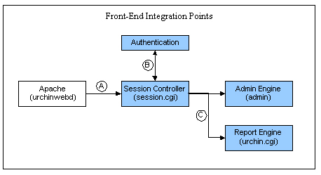

Overview of Urchin Integration Capabilities
Introduction
The Urchin front end is built on modular components and industry standard techniques to allow administrators to integrate Urchin report access into their existing or planned infrastructures. As part of our commitment to hosting providers and data centers, we test and support three integration points which should allow Urchin to integrate into most architectures.
The following diagram illustrates the primary components of the Urchin front-end and the three integration points. Both administrative and reporting functions are web-based and delivered from this system.

All content from the Urchin system is delivered via an Apache server that is installed as "urchinwebd" shown in the left side of the diagram. Requests are handled by the Apache server and passed using the CGI interface to a Session Controller application (session.cgi). The Session Controller performs Authentication and depending on the action passes the request on to either the Admin Engine (admin) or the Urchin Report Engine (urchin.cgi). Content with embedded session identifiers is passed back to the user.
The three points labeled "A", "B", and "C" are the three integration points mentioned previously. Point "A" allows the administrator to either replace or bypass the Urchin web server. Point "B" allows for external or no authentication. And point "C" allows for direct access to the reporting via a wrapper or portal.
Point A: Web Server Integration
Many hosting companies will already have a running web server or have a specially compiled web server that runs within their systems. As long as a web server is providing basic CGI operations, you may replace the Apache binary or use an existing web server to provide access to Urchin.
This integration point keeps the rest of the Urchin system intact. The Urchin interface will be used for administration, authentication, and report delivery. Users and Profiles will need to be configured within the Urchin system so as a user enters the system, Urchin will know which reports to allow them access to.
Point B: External Authentication or Authentication Bypass
Complex hosting environments will often have existing centralized controls for providing user authentication such as LDAP. With a simple configuration change, the Session Controller can call an authentication routine of your choice. A simple interface is provided for returning successful or failed logins. Existing authentication routines can be easily wrapped to provide the correct framework for both systems. Using integration at point "B", it also possible to bypass the authentication with a dummy routine and link directly to the landing page.
By using integration at point "B", the overall Urchin system remains intact with the exception that authentication is performed by an external application. Users and Profiles will need to be configured within the Urchin system so as a user enters the system, Urchin will know which reports to allow them access to. For complete details on the interface for using external authentication and an example of how to bypass authentication, please see Using External Authentication or Authentication Bypass.
Point C: Link Directly to Reports from Wrapper or Portal
Many of our customers have a one-to-one relation between a customer and a website, and wish to link to reporting for a particular website directly from the website's administration area. This area is typically already authenticated. Point C integration makes it easy to link directly to reporting either via a wrapper script or from an existing portal. In this scenario, the Urchin authentication and initial report selection screen are bypassed as users are taken directly to the Urchin reports.
By using integration at point "C", it is assumed that the service provider has control over who gets to view what, either by a one-to-one relation or by an existing configuration database. Urchin will still need to be configured for generating Profile reports, but this can be automated within or outside of the administrative interface. Urchin provides the capability to link directly to an Urchin report with a specific URL when the "Direct Report Linking" is enabled in the administration interface. Access to the Urchin report is controlled via a ".report.conf" file embedded in the directory specified by this URL.
For a complex portal integration, the Urchin reporting engine will propagate session and other portal variables in order to keep the session operating.